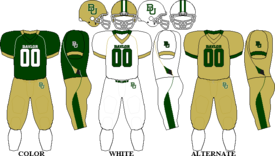

This is a huge header
This one's a little smaller...
And smaller still...
And so on...
Yep, still going...
Made it!!
My first line goes here.
Extra text!!
A second line goes here.
This is a bold piece of text. This word will be in italics. I want this word to be underlined. This line is struck through.
My Favorite Foods
Team Rankings
- Baylor Bears
- Seattle Seahawks
- Dallas Cowboys
